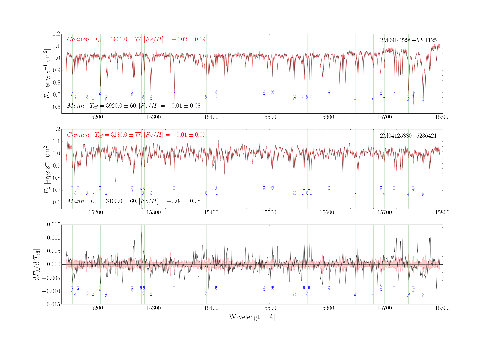

Projects
We present Active Learning for Accelerated Bayesian Inference (ALABI): an open-source Python package for performing Bayesian inference with computationally expensive models. Given a forward model and observational data to construct a likelihood and priors, the algorithm utilizes a Gaussian Process (GP) surrogate model trained to predict posterior probability as a function of input parameters, and employs active learning to iteratively improve GP predictive performance in high-likelihood regions where the GP is most uncertain. ALABI uses Markov Chain Monte Carlo (MCMC), including affine-invariant (emcee) and nested sampling (dynesty) implementations, to sample the GP surrogate model. This approach facilitates accurate estimation of the desired posterior distribution, while reducing the number of computationally expensive model evaluations required by factors of thousands. We demonstrate the performance of ALABI on a variety of test cases and science applications, including where inference is challenging due to strong degeneracies or multimodalities.
-->
Tidal Synchronization of TESS Eclipsing Binaries
Marshall Hobson-Ritz, Jessica Birky, Leah Peterson, Peter Gwartney, Rachel Wong, John Delker, Tyler Gordon, Samantha Gilbert, James R. A. Davenport, Rory Barnes
Tidal synchronization plays a fundamental role in the evolution of binary star systems. However, key details such as the timescale of synchronization, efficiency of tidal dissipation, final rotational period, and dependence on stellar mass are not well constrained. We present a catalog of rotation periods, orbital periods, and eccentricities from eclipsing binaries (EBs) that can be used to study the role of tides in the rotational evolution of low-mass dwarf (FGKM spectral type) binaries. This study presents the largest catalog of EB orbital and rotational periods (Porb and Prot) measured from the Transiting Exoplanet Satellite Survey (TESS). We first classify 4584 light curves from the TESS Eclipsing Binary Catalog according to out-of-eclipse stellar variability type: starspot modulation, ellipsoidal variability, non-periodic variability, and "other" variability (e.g. pulsations). We then manually validate each light curve classification, resulting in a sample of 1039 candidates with 584 high confidence EBs that exhibit detectable star-spot modulation. From there, we measure and compare the rotation period of each starspot-modulated EB using three methods: Lomb-Scargle periodograms, autocorrelation function, and phase dispersion minimization. We find that our period distributions are consistent with previous work that used a sample of 816 starspot EBs from Kepler to identify two populations: a synchronous population (with Porb ~ Prot) and a subsynchronous population (with 8Porb ~ 7Prot). Using Bayesian model comparison, we find that a bimodal distribution is a significantly better fit than a unimodal distribution for Kepler and TESS samples, both individually or combined, confirming that the subsynchronous population is statistically significant.
Improved Constraints for the XUV Luminosity Evolution of Trappist-1
Jessica Birky, Rory Barnes, and David P. Fleming
We re-examine the XUV luminosity evolution of TRAPPIST-1 utilizing new observational constraints (XUV and bolometric luminosity) from multi-epoch X-ray/UV photometry. Following the formalism presented in Fleming et al. (2020), we infer that TRAPPIST-1 maintained a saturated XUV luminosity, relative to the bolometric luminosity, of $\log_{10}(L_{\rm xuv}/L_{\rm bol}) = -3.03_{-0.23}^{+0.25}$ at early times for a period of $t_{\rm sat}$ $= 3.14_{-1.46}^{+2.22}$ Gyr. After the saturation phase, we find $L_{\rm xuv}$\ decayed over time by an exponential rate of $\beta_{\rm xuv} = -1.17_{-0.28}^{+0.27}$. Compared to our inferred age of the system, $\textrm{age} = 7.96_{-1.87}^{+1.78}$ Gyr, our result for $t_{\rm sat}$ suggests that there is only a $\sim4\%$~chance that TRAPPIST-1 still remains in the saturated phase today, which is significantly lower than the previous estimate of 40\%. Despite this reduction in $t_{\rm sat}$, our results remain consistent in the conclusion that the TRAPPIST-1 planets likely received an extreme amount XUV energy---an estimated integrated XUV energy of $\sim10^{30}-10^{32}$ erg over the star's lifetime.
Temperatures and Metallicities of M Dwarfs in the APOGEE Survey
Jessica Birky, David W. Hogg, Andrew W. Mann, and Adam Burgasser
M dwarfs have enormous potential for our understanding of structure and formation on both Galactic and exoplanetary scales through their properties and compositions. However, current atmosphere models have limited ability to reproduce spectral features in stars at the coolest temperatures (Teff < 4200 K) and to fully exploit the information content of current and upcoming large-scale spectroscopic surveys. Here we present a catalog of spectroscopic temperatures, metallicities, and spectral types for 5875 M dwarfs in the Apache Point Observatory Galactic Evolution Experiment (APOGEE) and Gaia-DR2 surveys using The Cannon: a flexible, data-driven spectral-modeling and parameter-inference framework demonstrated to estimate stellar-parameter labels (Teff, logg, [Fe/H], and detailed abundances) to high precision. Using a training sample of 87 M dwarfs with optically derived labels spanning calibrated with bolometric temperatures, and dex calibrated with FGK binary metallicities, we train a two-parameter model with predictive accuracy (in cross-validation) to 77 K and 0.09 dex respectively. We also train a one-dimensional spectral classification model using 51 M dwarfs with Sloan Digital Sky Survey optical spectral types ranging from M0 to M6, to predictive accuracy of 0.7 types. We find Cannon temperatures to be in agreement to within 60 K compared to a subsample of 1702 sources with color-derived temperatures, and Cannon metallicities to be in agreement to within 0.08 dex metallicity compared to a subsample of 15 FGK+M or M+M binaries. Finally, our comparison between Cannon and APOGEE pipeline (ASPCAP DR14) labels finds that ASPCAP is systematically biased toward reporting higher temperatures and lower metallicities for M dwarfs.